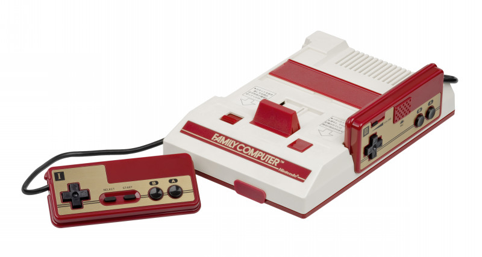

Nintendo Entertainment System, abreviado NES, se puso a la venta un 15 de Julio de 1983 en Japón bajo el nombre Famicom junto a tres ports de los míticos arcade de Nintendo: Donkey Kong, Donkey Kong Jr. y Popeye. Para finales de 1984 su popularidad había crecido tanto que ya era la consola más vendida en la tierra del sol naciente.
El éxito llevó a la compañía nipona a comercializar la máquina en nuestras tierras en 1986, concretamente el 1 de septiembre, en busca del mismo éxito que había logrado en ambos continentes.
Características
UNIDAD CENTRAL
Para su unidad central de proceso, la NES usa un microprocesador de 8 bits producido por Ricoh y basado en un núcleo MOS Technology 6502. Asimismo, incorpora un hardware estándar de sonido y un controlador de DMA on-die. Para ahorrar algo de espacio en el silicio, el CPU Ricoh omitió el comando BCD (código binario decimal) del núcleo 6502. Las versiones NTSC (Norteamérica y Japón) usan el Ricoh 2A03 (o RP2A03), que funciona a 1,79 MHz. Por otra parte, las versiones PAL (Europa y Australia) utilizan el Ricoh 2A07 (o RP2A07), que es idéntico al modelo 2A03 excepto por el hecho de que funcionan a una frecuencia de reloj más lenta, 1,66 Mhz y, por consiguiente, presentan un ajuste en su hardware de sonido.
MEMORIA
Nintendo NES contiene dos KB de memoria (RAM) interna. Un cartucho de juego puede llegar a contener RAM expandida para incrementar esta cifra. Asimismo, cuenta con 2 KB de RAM de video que son utilizados por la unidad de procesamiento de imágenes (PPU), 256 bytes de RAM sprite y un poco de RAM de paleta (usada para mostrar los gráficos en la pantalla).
El sistema soporta hasta 32 KB del programa ROM, aunque puede ser ampliado por órdenes de magnitud mediante el proceso de conmutación de bancos (en inglés, bank switching) —consistente en aumentar la cantidad de memoria RAM y ROM direccionable sin extender el bus de direcciones; esta técnica también se utilizaba para configurar un sistema en momentos diferentes, por ejemplo, una ROM indispensable para iniciar un sistema desde un disquete podía ser cambiada una vez que ya no se requiriera—. Además, los cartuchos podían contener 8 KB de SRAM (conocida también como «memoria estática») y 8168 bytes (aproximadamente 8 KB) de espacio de direcciones reservado como «zona de expansión». Otro tipo de memoria disponible en el cartucho era la VRAM (Video Random Access Memory) —el hardware de mapeo incluido en el cartucho permitía expandir la memoria de vídeo más allá de 12 KB).
VIDEO
La NES utiliza una unidad de procesamiento de imágenes (PPU) estándar desarrollada por Ricoh. La versión del procesador usada en los modelos NTSC, designada como RP2C02, opera a 5,37 MHz, mientras que la versión utilizada en los modelos PAL, llamada RP2C07, funciona a 5,32 MHz. Tanto el RP2C02 como el RP2C07 tienen una salida de vídeo compuesto. Las versiones especiales del hardware de la NES, diseñadas para su uso en juegos arcade, usan otras variaciones de la PPU. La PlayChoice-10 usa el RP2C03, que funciona a 5,37 MHz con una salida de vídeo RGB en frecuencias NTSC. Dos variaciones diferentes se usaron en el conjunto Nintendo Vs: el RP2C04 y el RP2C05. Ambas operan a 5,37 MHz y proporcionan una salida de vídeo RGB en frecuencias NTSC. Además, ambos hacen uso de paletas irregulares para prevenir el intercambio fácil de ROM de los juegos.
Todas las variaciones de la PPU tienen dos KiB de RAM de video, 256 bytes de RAM on-die atribuible (conocida como «OAM») para posicionar los sprites y 28 bytes adicionales de RAM on-die de paleta para permitir la selección del fondo de pantalla y los colores de los mismos mapas de bits ya mencionados. Esta memoria se almacena separadamente en buses internos de la PPU. Los 2 KiB de memoria RAM interna pueden usarse para diseñar mapas y atributos en el tablero de la NES, así como 8 KiB de ROM o RAM pueden incluirse en un cartucho a manera de patrón de mosaicos. Usando el «método de paginación» (bank switching), se puede utilizar virtualmente cualquier suma de memoria adicional desde un cartucho, siendo sólo limitado por los costos de fabricación
a resolución de pantalla estándar de la NES es de 256 pixeles horizontales por 240 pixeles verticales. Comúnmente, los juegos diseñados para el sistema NTSC tenían una resolución efectiva de sólo 256 por 224 pixeles, de modo que las ocho líneas del fondo y de la parte superior de la pantalla no son visibles en la mayoría de los televisores. Para memoria adicional de video de banda ancha, era igualmente posible apagar la pantalla antes de que el barrido de trama alcanzara la parte inferior de la pantalla.
Los conectores de salida de video variaban de un modelo a otro. La Famicom japonesa original sólo disponía de un modulador RF. Cuando se lanzó al mercado en Norteamérica y Europa, se le añadió un conector RCA para video compuesto además del modulador RF. La AV Famicom no tenía modulador RF y adoptó una salida de video compuesto a través de un conector multisalida patentado de doce pines, mismo que se había introducido por primera vez en la Super Famicom/Super Nintendo. Por otra parte, la reedición norteamericana de la NES, la NES 2, se asemejaba más al modelo de la Famicom original, en que disponía únicamente de un modulador RF para la salida de vídeo.46 Finalmente, la PlayChoice-10 utilizaba una salida de video RGB invertida.
AUDIO
La placa base de la NES soportaba un total de cinco canales de sonido, entre los que se incluían dos canales de onda de pulso de ciclo de trabajo variable —un ciclo de trabajo se define como la fracción de tiempo que un sistema se encuentra en estado «activo»— (12,5%, 25%, 50% y 75%), con un control de volumen de 16 niveles y un hardware de portamento, soportando frecuencias en un rango de 54 Hz a 28 kHz.
/p> Los canales adicionales incluían un canal de onda triangular de volumen fijo que soportaba frecuencias de 27 Hz a 56 kHz, un canal de ruido blanco con 16 niveles de volumen que soportaba dos modos (ajustando las entradas en un LFSR) en 16 frecuencias preprogramadas, y un canal de modulación de impulsos diferenciales (DPCM) con seis bits de rango, que hacía uso de una codificación delta de un bit en 16 frecuencias de muestreo preprogramadas de 4,2 kHz a 33,5 Khz. Este último canal era capaz asimismo de reproducir sonido estándar PCM mediante la escritura de los valores individuales de siete bits en intervalos de tiempo.
